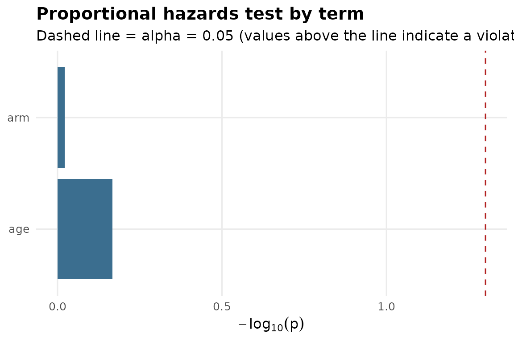
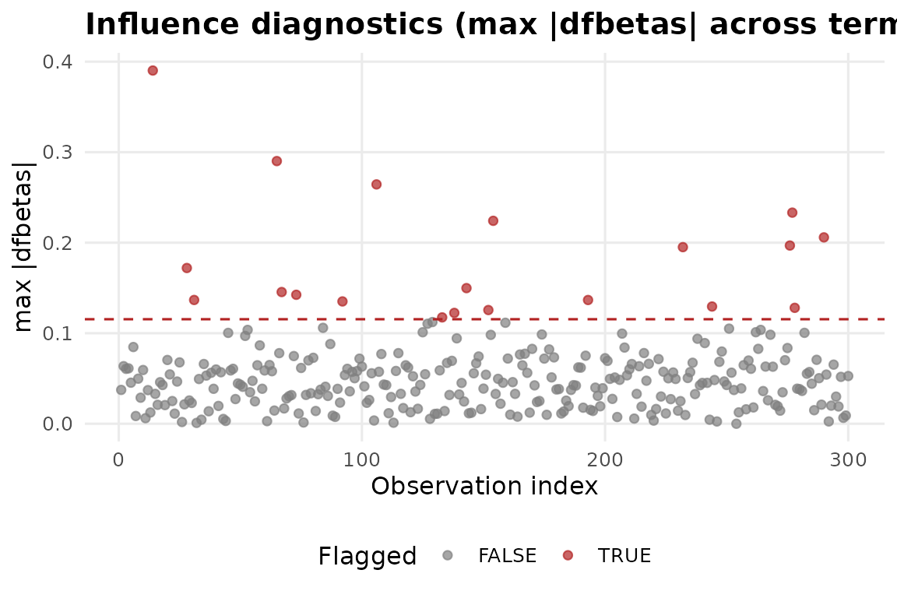
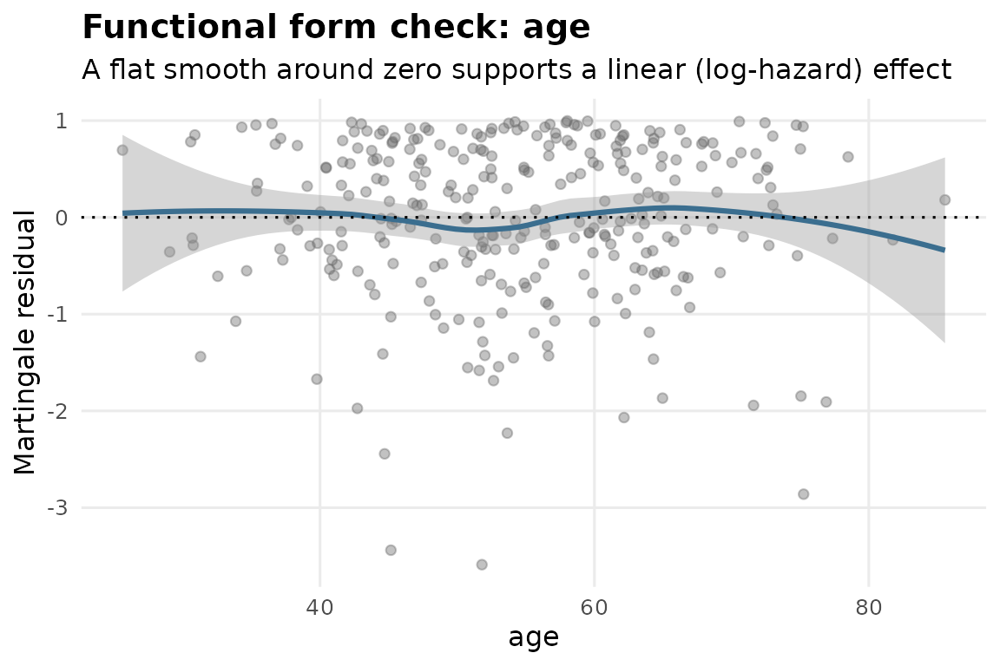
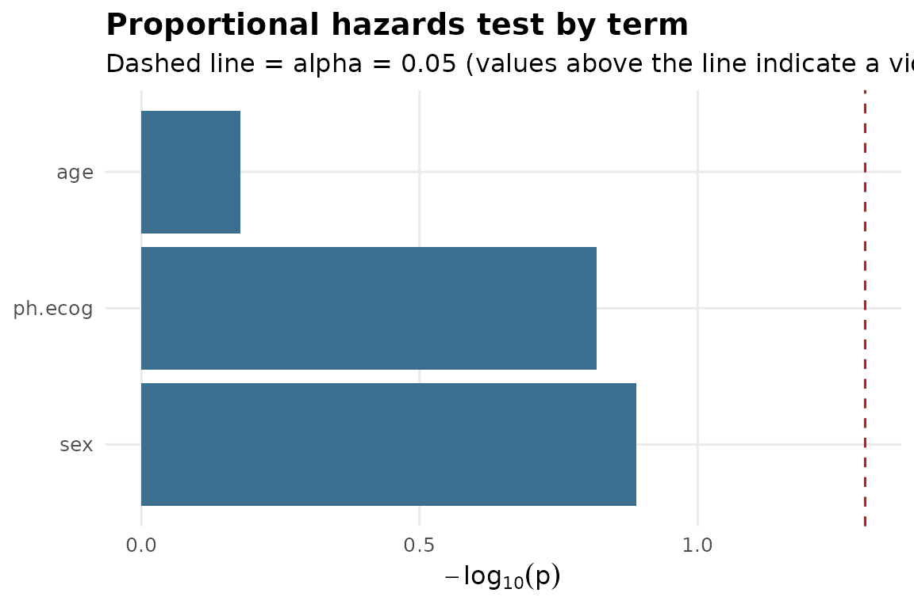
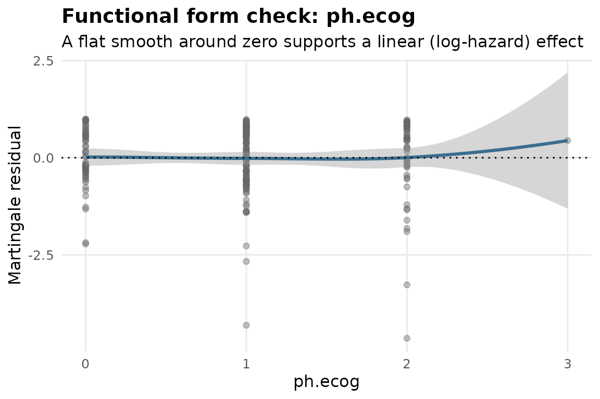

Why a pipeline instead of just coxph()
Fitting a Cox model is one line of code. Trusting it takes several
more: checking the proportional hazards assumption, checking whether a
handful of observations are driving the estimate, and checking whether
continuous covariates actually enter the model linearly on the
log-hazard scale. fit_coxph_pipeline() runs all of that in
one call and returns a structured verdict alongside the model.
A simulated example
set.seed(1)
n <- 300
dat <- data.frame(
time = rexp(n, rate = 0.05),
event = rbinom(n, 1, 0.7),
arm = factor(sample(c("control", "treatment"), n, replace = TRUE)),
age = rnorm(n, 55, 10)
)
fit <- fit_coxph_pipeline(
data = dat,
time_var = "time",
event_var = "event",
covariates = "arm",
adjust_for = "age"
)
fit
#> <omicsuite Cox PH pipeline>
#>
#> Unadjusted model:
#> Call:
#> survival::coxph(formula = formula_unadjusted, data = data, x = TRUE)
#>
#> coef exp(coef) se(coef) z p
#> armtreatment -0.05552 0.94599 0.14019 -0.396 0.692
#>
#> Likelihood ratio test=0.16 on 1 df, p=0.6923
#> n= 300, number of events= 205
#>
#> Adjusted model:
#> Call:
#> survival::coxph(formula = formula_adjusted, data = data, x = TRUE)
#>
#> coef exp(coef) se(coef) z p
#> armtreatment -0.061078 0.940750 0.140831 -0.434 0.665
#> age -0.002787 0.997217 0.006605 -0.422 0.673
#>
#> Likelihood ratio test=0.34 on 2 df, p=0.8458
#> n= 300, number of events= 205
#>
#> Diagnostic verdicts:
#> [OK ] proportional_hazards[arm] No evidence against proportional hazards for this term. [see plots$ph_plot]
#> [OK ] proportional_hazards[age] No evidence against proportional hazards for this term. [see plots$ph_plot]
#> [OK ] proportional_hazards[GLOBAL] Global test finds no overall violation of the proportional hazards assumption. [see plots$ph_plot]
#> [FLAG] influence[dfbetas] 20 of 300 observations used in the fit (6.7%) exceed the |dfbetas| > 0.115 cutoff. A non-trivial share of observations are individually influential -- inspect flagged rows before reporting hazard ratios. [see plots$influence_plot]
#> [RVW ] functional_form[age] Martingale residuals plotted against this covariate; a loess smooth that is flat suggests the linear (log-hazard) form is adequate. Requires visual review -- not auto-scored. [see plots$functional_form_age]
#> [INTP] interpretation[armtreatment] HR = 0.941 (95% CI [0.714, 1.240]). this level of `arm` (vs. the reference level) is associated with a 5.9% lower hazard at any given time, holding other model terms fixed (not statistically significant at this alpha, p = 0.6645).
#> [INTP] interpretation[age] HR = 0.997 (95% CI [0.984, 1.010]). a one-unit increase in `age` is associated with a 0.3% lower hazard at any given time, holding other model terms fixed (not statistically significant at this alpha, p = 0.6730).Reading the verdict table
fit$verdicts
#> check verdict statistic p_value
#> 1 proportional_hazards[arm] pass 0.003998033 0.9495834
#> 2 proportional_hazards[age] pass 0.169516109 0.6805422
#> 3 proportional_hazards[GLOBAL] pass 0.182305142 0.9128784
#> 4 influence[dfbetas] flagged 0.066666667 NA
#> 5 functional_form[age] review NA NA
#> 6 interpretation[armtreatment] interpretation 0.940749718 0.6645071
#> 7 interpretation[age] interpretation 0.997216713 0.6730464
#> note
#> 1 No evidence against proportional hazards for this term.
#> 2 No evidence against proportional hazards for this term.
#> 3 Global test finds no overall violation of the proportional hazards assumption.
#> 4 20 of 300 observations used in the fit (6.7%) exceed the |dfbetas| > 0.115 cutoff. A non-trivial share of observations are individually influential -- inspect flagged rows before reporting hazard ratios.
#> 5 Martingale residuals plotted against this covariate; a loess smooth that is flat suggests the linear (log-hazard) form is adequate. Requires visual review -- not auto-scored.
#> 6 HR = 0.941 (95% CI [0.714, 1.240]). this level of `arm` (vs. the reference level) is associated with a 5.9% lower hazard at any given time, holding other model terms fixed (not statistically significant at this alpha, p = 0.6645).
#> 7 HR = 0.997 (95% CI [0.984, 1.010]). a one-unit increase in `age` is associated with a 0.3% lower hazard at any given time, holding other model terms fixed (not statistically significant at this alpha, p = 0.6730).
#> plot
#> 1 ph_plot
#> 2 ph_plot
#> 3 ph_plot
#> 4 influence_plot
#> 5 functional_form_age
#> 6 <NA>
#> 7 <NA>Each row is one diagnostic check. "pass" means no
evidence of a problem; "flagged" means the check crossed
the threshold and is worth a sentence in your write-up;
"review" (functional form only) means the check produces a
plot for visual inspection rather than an automatic pass/fail, since
linearity-on-the-log-hazard-scale is a judgment call, not a threshold
test.
Diagnostic plots
plot(fit, which = "ph_plot")
plot(fit, which = "influence_plot")
plot(fit, which = "functional_form_age")
A real worked example: the NCCTG lung cancer trial
Simulated data proves the code runs; it doesn’t prove the diagnostics
catch anything real. survival::lung – built into the
survival package, no download required – is a better test
case: ph.ecog has a few missing values that
coxph() will otherwise drop silently, and sex
is a borderline case for the proportional hazards assumption in this
dataset.
library(survival)
lung2 <- lung
lung2$status <- lung2$status - 1 # recode 1/2 -> 0/1 event coding
lung2$sex <- factor(lung2$sex, labels = c("male", "female"))
# ph.ecog has a handful of NAs; drop them explicitly rather than letting
# coxph() do it silently, so the row count in the model is exactly what
# you'd report in a methods section.
lung2 <- lung2[stats::complete.cases(lung2[, c("time", "status", "sex", "age", "ph.ecog")]), ]
fit_lung <- fit_coxph_pipeline(
data = lung2,
time_var = "time",
event_var = "status",
covariates = "sex",
adjust_for = c("age", "ph.ecog")
)
fit_lung
#> <omicsuite Cox PH pipeline>
#>
#> Unadjusted model:
#> Call:
#> survival::coxph(formula = formula_unadjusted, data = data, x = TRUE)
#>
#> coef exp(coef) se(coef) z p
#> sexfemale -0.5237 0.5923 0.1674 -3.128 0.00176
#>
#> Likelihood ratio test=10.3 on 1 df, p=0.001331
#> n= 227, number of events= 164
#>
#> Adjusted model:
#> Call:
#> survival::coxph(formula = formula_adjusted, data = data, x = TRUE)
#>
#> coef exp(coef) se(coef) z p
#> sexfemale -0.552612 0.575445 0.167739 -3.294 0.000986
#> age 0.011067 1.011128 0.009267 1.194 0.232416
#> ph.ecog 0.463728 1.589991 0.113577 4.083 4.45e-05
#>
#> Likelihood ratio test=30.5 on 3 df, p=1.083e-06
#> n= 227, number of events= 164
#>
#> Diagnostic verdicts:
#> [OK ] proportional_hazards[sex] No evidence against proportional hazards for this term. [see plots$ph_plot]
#> [OK ] proportional_hazards[age] No evidence against proportional hazards for this term. [see plots$ph_plot]
#> [OK ] proportional_hazards[ph.ecog] No evidence against proportional hazards for this term. [see plots$ph_plot]
#> [OK ] proportional_hazards[GLOBAL] Global test finds no overall violation of the proportional hazards assumption. [see plots$ph_plot]
#> [FLAG] influence[dfbetas] 23 of 227 observations used in the fit (10.1%) exceed the |dfbetas| > 0.133 cutoff. A non-trivial share of observations are individually influential -- inspect flagged rows before reporting hazard ratios. [see plots$influence_plot]
#> [RVW ] functional_form[age] Martingale residuals plotted against this covariate; a loess smooth that is flat suggests the linear (log-hazard) form is adequate. Requires visual review -- not auto-scored. [see plots$functional_form_age]
#> [RVW ] functional_form[ph.ecog] Martingale residuals plotted against this covariate; a loess smooth that is flat suggests the linear (log-hazard) form is adequate. Requires visual review -- not auto-scored. [see plots$functional_form_ph.ecog]
#> [INTP] interpretation[sexfemale] HR = 0.575 (95% CI [0.414, 0.799]). this level of `sex` (vs. the reference level) is associated with a 42.5% lower hazard at any given time, holding other model terms fixed (statistically significant, p = 0.0010).
#> [INTP] interpretation[age] HR = 1.011 (95% CI [0.993, 1.030]). a one-unit increase in `age` is associated with a 1.1% higher hazard at any given time, holding other model terms fixed (not statistically significant at this alpha, p = 0.2324).
#> [INTP] interpretation[ph.ecog] HR = 1.590 (95% CI [1.273, 1.986]). a one-unit increase in `ph.ecog` is associated with a 59.0% higher hazard at any given time, holding other model terms fixed (statistically significant, p = 0.0000).
fit_lung$verdicts
#> check verdict statistic p_value
#> 1 proportional_hazards[sex] pass 2.3054372 1.289220e-01
#> 2 proportional_hazards[age] pass 0.1879877 6.645968e-01
#> 3 proportional_hazards[ph.ecog] pass 2.0542488 1.517821e-01
#> 4 proportional_hazards[GLOBAL] pass 4.4636576 2.155549e-01
#> 5 influence[dfbetas] flagged 0.1013216 NA
#> 6 functional_form[age] review NA NA
#> 7 functional_form[ph.ecog] review NA NA
#> 8 interpretation[sexfemale] interpretation 0.5754446 9.860514e-04
#> 9 interpretation[age] interpretation 1.0111282 2.324157e-01
#> 10 interpretation[ph.ecog] interpretation 1.5899912 4.447067e-05
#> note
#> 1 No evidence against proportional hazards for this term.
#> 2 No evidence against proportional hazards for this term.
#> 3 No evidence against proportional hazards for this term.
#> 4 Global test finds no overall violation of the proportional hazards assumption.
#> 5 23 of 227 observations used in the fit (10.1%) exceed the |dfbetas| > 0.133 cutoff. A non-trivial share of observations are individually influential -- inspect flagged rows before reporting hazard ratios.
#> 6 Martingale residuals plotted against this covariate; a loess smooth that is flat suggests the linear (log-hazard) form is adequate. Requires visual review -- not auto-scored.
#> 7 Martingale residuals plotted against this covariate; a loess smooth that is flat suggests the linear (log-hazard) form is adequate. Requires visual review -- not auto-scored.
#> 8 HR = 0.575 (95% CI [0.414, 0.799]). this level of `sex` (vs. the reference level) is associated with a 42.5% lower hazard at any given time, holding other model terms fixed (statistically significant, p = 0.0010).
#> 9 HR = 1.011 (95% CI [0.993, 1.030]). a one-unit increase in `age` is associated with a 1.1% higher hazard at any given time, holding other model terms fixed (not statistically significant at this alpha, p = 0.2324).
#> 10 HR = 1.590 (95% CI [1.273, 1.986]). a one-unit increase in `ph.ecog` is associated with a 59.0% higher hazard at any given time, holding other model terms fixed (statistically significant, p = 0.0000).
#> plot
#> 1 ph_plot
#> 2 ph_plot
#> 3 ph_plot
#> 4 ph_plot
#> 5 influence_plot
#> 6 functional_form_age
#> 7 functional_form_ph.ecog
#> 8 <NA>
#> 9 <NA>
#> 10 <NA>
plot(fit_lung, which = "ph_plot")
plot(fit_lung, which = "functional_form_ph.ecog")
#> Warning in simpleLoess(y, x, w, span, degree = degree, parametric = parametric,
#> : pseudoinverse used at -0.015
#> Warning in simpleLoess(y, x, w, span, degree = degree, parametric = parametric,
#> : neighborhood radius 1.015
#> Warning in simpleLoess(y, x, w, span, degree = degree, parametric = parametric,
#> : reciprocal condition number 0
#> Warning in simpleLoess(y, x, w, span, degree = degree, parametric = parametric,
#> : There are other near singularities as well. 1
#> Warning in predLoess(object$y, object$x, newx = if (is.null(newdata)) object$x
#> else if (is.data.frame(newdata))
#> as.matrix(model.frame(delete.response(terms(object)), : pseudoinverse used at
#> -0.015
#> Warning in predLoess(object$y, object$x, newx = if (is.null(newdata)) object$x
#> else if (is.data.frame(newdata))
#> as.matrix(model.frame(delete.response(terms(object)), : neighborhood radius
#> 1.015
#> Warning in predLoess(object$y, object$x, newx = if (is.null(newdata)) object$x
#> else if (is.data.frame(newdata))
#> as.matrix(model.frame(delete.response(terms(object)), : reciprocal condition
#> number 0
#> Warning in predLoess(object$y, object$x, newx = if (is.null(newdata)) object$x
#> else if (is.data.frame(newdata))
#> as.matrix(model.frame(delete.response(terms(object)), : There are other near
#> singularities as well. 1
Two things worth checking by eye rather than taking on faith: confirm
fit_lung$model_adjusted$n matches the row count of
lung2 after the complete.cases() filter (so
you know exactly which observations the hazard ratios describe), and
look at whether sex clears the proportional hazards test
here – it’s close enough in this dataset that it’s worth a sentence in a
write-up either way, rather than a silent pass.